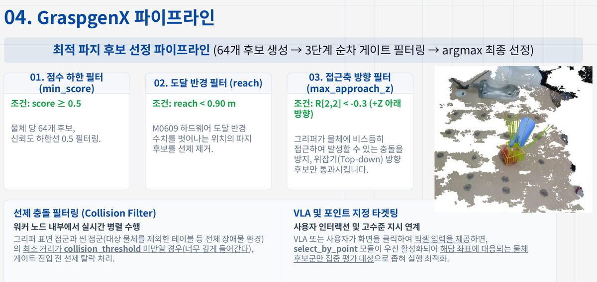
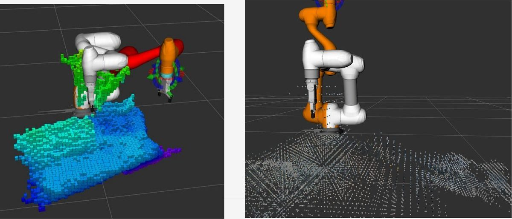
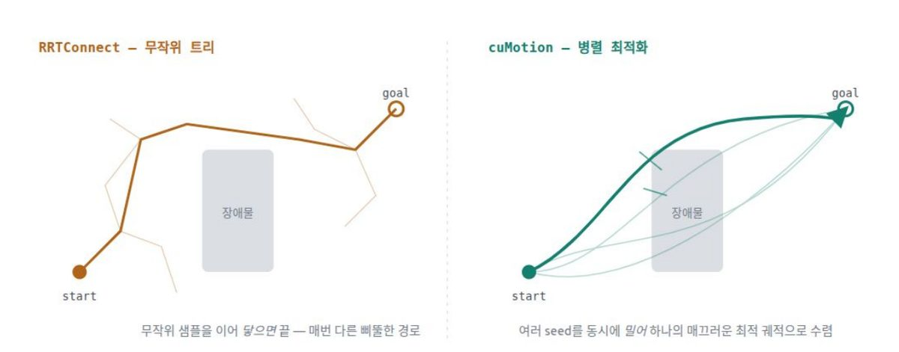
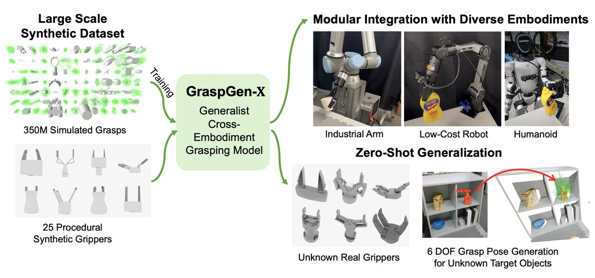

Last modified
한눈에 보기
1분 시연 영상
- 내 담당 — 작업 제어(FSM) · 인식·파지 연결 · 안전 노드 통합(공동작업) · GPU 메모리 조정 · 실물 그리퍼 실측 보정
- 영상에서 확인 가능한 것 — 지시한 물체를 집어 놓고 홈 위치로 복귀(8월 11일) · 손을 넣으면 멈추고 새 경로로 재계획(8월 3일, 팀원들과 실기 확인)
- 목표 — 마트 계산대 · "사과 바구니에 담아줘" 같은 자연어 지시 · 장애물을 피해 집어 옮기기
- 판단·인식과 작업 제어의 구분 — VLA(팀 판단 계층): 집을 물체·놓을 곳 결정 / 작업 제어(FSM): 실제 이동
프로젝트 구현
사람이 말로 지시하면 카메라로 물체를 찾아 집을 자세를 고르고, 로봇 팔이 정해진 순서대로 집어 옮기는 것을 목표로 만든 협동로봇 시스템입니다. 지시를 해석하는 판단 계층과 로봇을 움직이고 멈추는 작업 제어 계층으로 나뉩니다. 팀은 음성이나 글로 받은 지시를 "어떤 물체를 어디로"로 정리하는 판단 계층과 조작 화면을 만들었습니다.
물체를 찾아 집을 자세 고르기 (YOLO-seg, GraspGenX)
YOLO-seg(물체 영역을 픽셀 단위로 나누는 인식 모델)로 카메라 깊이 영상에서 물체 영역만 잘라 3차원 점군 데이터를 만들고, 이 점군에 GraspGenX(물체를 집을 수 있는 자세 후보를 만드는 Nvidia의 파지 파운데이션 모델)를 적용해 파지 자세를 계산한 뒤 가장 좋은 자세를 고릅니다.




형태가 다른 여러 물체(콜라병, 바나나 등)로 넓혀 보려 했지만, 물체의 3차원 점군 데이터가 바닥과 뭉개져 형상을 구분하기 어려운 물체는 집지 못했습니다. 카메라 해상도를 파지 모델이 요구한 1280×720으로 올려 점군을 촘촘하게 만들면 나아질 수 있었지만, 깊이 영상 해상도를 올리면 프레임이 끊겼고(USB 대역폭 초과로 추정) 장애물 지도 갱신의 CPU 부하도 크게 늘어 노트북 성능상 낮은 해상도를 유지해야 했습니다. 당시 GPU 메모리는 이미 8,188MiB 중 6,752MiB를 사용 중이었고 CPU 점유율도 대부분 80% 이상이었습니다.


파지 모델 도입 건의와 인식·모델 연결, 실물 그리퍼 보정, GPU 메모리 조정 등 제가 맡은 진행 과정은 아래 사례에서 다룹니다.
환경 3D 인식(Octomap / nvblox)과 모션계획(OMPL / cuMotion)
팀은 작업대 옆에 고정한 RGB-D 카메라의 깊이 영상으로 주변 장애물을 3차원 지도로 만드는 환경 인식을 octomap(CPU)과 nvblox(GPU)로, 그 지도를 받아 장애물을 피하는 경로를 만드는 모션계획을 기본 경로인 OMPL(MoveIt 기본 경로계획)과 선택 경로인 cuMotion(cuRobo 기반 GPU 경로계획)으로 구성했습니다. OMPL을 먼저 실기에 도입했고 cuMotion은 그 뒤에 더했습니다. octomap은 OMPL에, nvblox는 cuMotion에 장애물 정보를 넘깁니다.


두 장애물 지도의 반응 비교, 장애물 지도가 비어도 계획이 성공해 버리는 문제, 충돌 검사용 구 모델은 아래 진행 과정의 06·10·11 사례에서 다룹니다.
단계별로 움직이고 멈추는 작업 제어(FSM)

저는 로봇 구동 파트에서 작업을 인식 → 계획 → 집기 → 옮겨 놓기 단계로 나눠 순서를 정하는 상태머신(FSM)을 맡았습니다.
정지와 그리퍼 판단은 팀이 정한 안전 규칙을 따릅니다. 예를 들어 "멈춰"는 언어 모델을 거치지 않고 바로 일시정지로 이어지고, 물체를 든 채 멈추면 그리퍼를 자동으로 열지 않습니다.
진행 과정 각 번호를 펼치면 사진과 함께 자세한 설명이 나옵니다
동기
- 과제AI(Computer Vision) 기반 협동 로봇 작업 어시스턴트 구현
- 출발점(팀)이전 협동로봇 프로젝트의 교시(좌표를 일일이 미리 지정) 부담 → 구현할 기능(LLM 지시 해석 · GPU 경로계획)부터 선택
- 시나리오사람과 협업하는 마트 계산대
- 범위 조정8월 4~5일 컨베이어 벨트 → 고정 작업대(파지 모델과 안 맞음 · 벨트 폭 좁음 · 판단 계층 튜닝 어려움)
파지 모델 도입 제안
계기이전 프로젝트의 좌표 교시 부담제안GraspGenX 도입 건의 — 카메라 영상으로 파지 자세 생성맡은 일인식 결과 → GraspGenX 연결 · 후보 거르기결과8월 11일 실제 카메라 장면에서 지정 물체 → 파지 후보까지 연결 확인
교시 불편과 GraspGenX 시연

이전 프로젝트에서는 좌표를 일일이 교시해야 했습니다. 그리퍼가 집을 자리를 스스로 찾는 GraspGenX의 시연을 보고 쓸 자리를 찾아본 뒤, 교시 부담을 대신할 수 있다고 판단해 팀에 도입을 건의했습니다.
CAD 모델 대신 카메라 영상
팀은 물체의 CAD 모델이 필요한 방식 대신, 카메라 영상으로 바로 파지 후보를 만드는 GraspGenX를 시작점으로 삼았습니다.
후보 거르기와 후보 수 64개
저는 물체 영역을 모델에 넘기고, 나온 후보를 점수·도달 범위·접근 방향으로 걸러 하나를 고르는 연결을 맡았습니다. GPU 8GB를 여러 모듈과 나눠 쓰려고 후보 수는 200개에서 64개로 줄였습니다.
8월 11일 실제 카메라 장면
실제 카메라로 찍은 6~9개 물체 장면에서 VLA가 지정한 물체가 GraspGenX 파지 후보까지 이어졌습니다.
관심 가는 기술을 만나면 지금 작업의 불편(교시 부담)을 덜어 줄 쓸 자리부터 확인하고 제안했습니다.
구현 준비
체커보드 평평함 보정과 좌표 캘리브레이션
목적옆에 고정한 카메라 위치 → 로봇 기준 좌표막힌 점실제 위치와 시뮬레이션 속 위치의 오차한 일원인 후보 3가지로 분리 → 보드 평평함 · 파일철 지지 · 수집 방식 변경결과위치 오차 개선 → 다음 단계 진행
체커보드로 모은 데이터
작업대 옆 고정 카메라의 위치를 로봇 기준 좌표로 바꾸려고, 로봇 팔에 체커보드(격자무늬 판)를 붙여 캘리브레이션 데이터를 모았습니다.
오차 원인 후보 세 가지
물체의 실제 위치와 시뮬레이션 속 위치의 오차가 컸습니다. 원인 후보를 보드 평평함·조명, 데이터의 각도·위치 다양성, 평가 로직 세 가지로 나누고, 보드 평평함을 핵심으로 봤습니다.

파일철에 붙인 체커보드
우드락 대신 플라스틱 파일철로 보드를 받치고, 그리퍼가 블록을 문 채 여러 각도로 돌 때도 보드가 평평하게 고정되도록 수집 방식을 바꿨습니다. 카메라 마운트 고정은 팀원들과 함께, 수집 방식과 재수집 판단은 제가 맡았습니다.
위치 오차 개선
물체 위치와 시뮬레이션 위치가 비슷해져, 그 위에서 파지 후보 생성과 우회 경로 이동을 이어 갔습니다.
계산 결과보다 먼저 데이터를 만드는 실물 도구(체커보드)의 상태를 점검하고 고정해야 한다는 점을 배웠습니다.
실물 그리퍼 실측 보정
목적시뮬레이션 그리퍼 모델 → 실물 그리퍼에 맞춤한 일모델 회전값 비교 · 직접 실측(브라켓 22mm · 손끝 +38mm) · 벌림 폭별 보정표결과파지 모델은 그대로, 차이는 그리퍼 코드에서 흡수
시뮬레이션과 실기의 규격 차이

RViz2에서는 정상이던 그리퍼 모델이 실기에서는 실물과 규격이 달랐고, 파지 자세를 손목 끝 기준으로 잘못 해석해 그리퍼가 90° 눕기도 했습니다.
모델 파일 회전값 비교
GraspGenX는 그대로 두고 우리 쪽 URDF와 그리퍼 코드에서 차이를 흡수하기로 했습니다. 두 모델 파일의 회전값을 행렬로 펼쳐 비교해 파지 기준점을 그리퍼 몸체로 확정했습니다.
22mm 브라켓과 38mm 손끝 길이
펜던트에서 공구 끝 기준점을 잡고 그리퍼를 수직으로 내려 접촉 지점까지 직접 재서, 22mm 브라켓과 모델보다 38mm 긴 손끝 길이를 찾았습니다.
벌림 폭별 손끝 길이 보정표
힌지 구조라 벌릴수록 손끝 길이가 짧아져, 벌림 폭별 보정표를 만들어 충돌 검사용 그리퍼 모양과 RViz 표시에 반영했습니다. 닫힘 폭 여유값의 부호 오류(물체에 닿기 전에 멈춤)를 바로잡고, 폭 단위(1/10mm)와 기본 파지력(40N, 사과를 으깸)을 규약으로 정리했습니다.
시뮬레이션에서 정상인 모델도 실물 그리퍼의 치수와 기준을 다시 재서 맞춰야 한다는 점을 익혔습니다.
단일 GPU 메모리 조정
조건노트북 GPU 하나(8GB)를 여러 모듈이 나눠 씀한 일파지 후보 200 → 64개 · 중복 실행되던 인식 노드 → 1개결과모든 모듈 함께 구동
노트북 GPU 하나(8GB)

nvblox·cuMotion·YOLO-seg·GraspGenX가 노트북 GPU 하나(8GB)를 나눠 써야 했습니다.
지연 병목과 파지 후보 수
물체 인식은 카메라 영상 공급보다 빨라 더 빠른 실행 형식으로 바꾸지 않기로 했고(실측해 보니 YOLO 상주 120MiB·추론 6.7ms), 지연 병목인 파지 후보 생성의 부하를 줄였습니다. 후보 수를 200개에서 64개로 낮춘 것도 그중 하나입니다.
컨테이너 안에 쌓인 인식 노드
메모리 부족의 주된 원인은 실행 환경이었습니다. 재실행할 때마다 컨테이너 안에 인식 노드가 최대 10개까지 쌓여 GPU 메모리 2.6GB를 차지하고 물체 마스크도 뒤섞였습니다.
실행 래퍼와 중복 실행 방지 락(lock)으로 노드를 1개로 줄였고, 파지 워커가 중복으로 올라가던 원인도 찾았습니다.
컨테이너 안팎의 노드 실행
팀은 GPU를 쓰는 영역 분할·파지 후보 생성은 컨테이너 안에서, 나머지는 호스트에서 돌려 ROS 2 토픽으로 주고받았습니다. 이렇게 정리한 뒤 모든 모듈을 함께 구동했습니다.
GPU 부하 조율과 프로그램 실행·종료 관리는 다른 문제였고, 기능 속도 못지않게 전체 실행 환경을 안정적으로 통제해야 한다는 점을 배웠습니다.
구현 과정
실기 동작에 맞춘 접근 거리와 파지 조건 조정
무엇실기 동작에 맞춘 파지 후보 선별 · 접근 거리 · 여유값방법후보 64개 → 점수 · 도달 반경 · 접근 방향 순 선별 · 접근 거리 0.10 → 0.15m결과바닥을 긁지 않고 적당한 거리에서 물체 중심 파지 확인
가상 환경 검증에서 이어진 실기 반복
가상 환경에서 검증한 동작을 실기로 옮기자 더 다듬을 곳이 보였습니다. 실기 구동을 거듭 관찰하며 접근 거리, 후보 선별 조건, 여유값을 조정했습니다.
파지 후보를 고르는 세 단계 조건
64개 후보를 점수 → 도달 반경 → 위에서 내려오는 접근 방향 순으로 걸렀습니다. 옆이나 크게 기울어 들어가 테이블과 부딪힐 수 있는 후보는 빼고, 남은 후보 중 점수가 가장 높은 자세를 골랐습니다.
접근 거리와 여유값 조정
집기 전 물러서는 접근 거리를 0.10m에서 0.15m로 늘리고 닫힘 폭 여유값 부호를 함께 맞췄습니다. 그리퍼가 바닥을 긁지 않고 적당한 거리에서 물체 중심을 집었습니다.
가상 환경 검증 뒤에도 실제 환경에 맞춰 접근·파지 조건을 반복해 조율해야 온전한 동작이 된다는 점을 배웠습니다.
작업 환경 3D 장애물 지도(CPU·GPU) 반응 비교
무엇CPU octomap · GPU nvblox 장애물 지도 반응 비교방법작업 영역에 노트북 케이스를 넣었다 빼기(8월 11일)결과nvblox가 먼저 나타나고 더 빨리 사라짐
노트북 케이스 넣고 빼기
CPU로 계산하는 octomap과 GPU로 계산하는 nvblox를 같은 화면에 띄우고, 작업 영역에 노트북 케이스를 넣었다 뺐습니다.
nvblox가 먼저, 더 빨리
nvblox 쪽이 먼저 나타나고, 케이스를 뺀 뒤에도 더 빨리 사라졌습니다. 연산 방식에 따른 반응 차이를 실제 장면에서 확인했습니다.
파지 재시도와 안전정지 복구 시 홈 위치를 경유하도록 전이 규칙 설계
무엇파지 재시도 · 안전정지 복구 때 홈 위치 경유이유물체 높이에서 다시 촬영 → 그리퍼를 물체로 오인식결과FSM 전이표 반영 · 시험 코드 검사
물체 높이에서 다시 촬영하는 문제
물체를 다시 집거나 안전정지 뒤 복구할 때 로봇 팔이 물체 높이에 남은 채 다시 촬영하면, 그리퍼 자신을 물체로 잘못 인식할 수 있었습니다.
전이표 반영과 시험 코드 검사
재시도와 안전정지 복구 뒤에는 반드시 홈 위치를 거치도록 FSM 전이표에 반영하고, 시험 코드에 해당 전이가 허용되는지 확인하는 검사를 두었습니다.
로봇 제어 일원화와 시스템 통합
팀 작업 참여무엇로봇 팔은 작업 제어(FSM)만 움직이게 정리(팀)맡은 일판단 계층 · 인식 ↔ 작업 제어 연결(공동작업)결과지시한 물체를 집어 옮기는 전체 과정 실물 확인
작업 제어로 일원화
팀은 판단 계층과 작업 제어(FSM)가 모두 로봇 팔을 움직일 수 있던 구조를 작업 제어만 팔을 움직이도록 정리했습니다.
판단·인식과 작업 제어 연결
저는 판단 계층·인식과 작업 제어를 잇는 연결을 함께 만들었고(공동작업), 지시한 물체를 집어 옮기는 전체 과정을 실물로 확인했습니다.
문제해결
카메라·파지 모델 실기 검증 — 위치 오차 실측과 원인 분리
문제 파트카메라 인식 → 파지 위치(8월 5일)문제물체 위치가 시선 방향으로 약 1.7cm 앞에 찍힘해결앞쪽 표면 편향임을 수식으로 유도 · 캘리브레이션 값은 그대로 · 코드와 문서에 경고배운 점수치부터 맞추기보다 측정 · 계산 방식에서 원인을 먼저 나눔
시선 방향으로 약 1.7cm 앞
8월 5일 실기 검증에서 물체 위치가 카메라 시선 방향으로 약 1.7cm 앞에 찍혔습니다. 캘리브레이션 값을 고치는 대신, 깊이 카메라로 잰 위치는 물체 중심이 아니라 보이는 앞쪽 표면의 중심이라는 점을 수식으로 유도했습니다.
반지름의 3분의 2만큼
구 모양 물체는 중심보다 반지름의 3분의 2만큼 카메라 쪽으로 찍힙니다(반지름 2.5cm 사과면 약 1.7cm로 실측과 일치). 좌표계 불일치가 아니라 표면만 재서 생긴 편향이었습니다.
파지 기준점과 TCP 혼동
파지 자세 기준점과 로봇 공구 끝 기준점(TCP)을 혼동해 생긴 옆 방향 차이(30° 기울면 약 9cm)도 "좌표 오차"와 따로 분리했습니다.

코드와 문서에 남긴 경고
캘리브레이션 값은 그대로 두고, 표면 편향을 캘리브레이션으로 보정하지 말라는 경고를 코드와 문서에 남겼습니다.
오차가 보이면 수치부터 맞추기보다 데이터가 어떻게 측정·계산되는지에서 원인을 먼저 나눠 봐야 한다는 점을 배웠습니다.
장애물 지도가 비어도 경로 계획이 성공해 버리는 문제
문제 파트환경 3D 인식 → GPU 모션계획(nvblox → cuMotion)문제장애물 지도가 꺼져도 계획은 "장애물 없는 세상" 기준으로 성공해결로봇을 움직이지 않고 재현 → 지도 서비스가 없으면 이동 거부(공동작업 · 실험 코드)배운 점"계획 성공"과 "안전한 이동"은 따로 확인
플래너마다 다른 장애물 정보
팀 구성에서 OMPL은 octomap의 3차원 칸 지도를 MoveIt 계획 장면으로, cuMotion은 nvblox의 거리 지도(ESDF)를 계획할 때마다 한 번씩 받습니다.
성공 신호에 가려진 실패
nvblox가 꺼지면(2차원 설정이면 첫 계획 요청에 꺼짐) cuMotion은 장애물 없는 세상을 기준으로 계획에 성공합니다. 성공만 보고 넘어가면 로봇이 움직인 뒤에야 드러나는 실패라, 저는 로봇을 움직이지 않고 계획만 실행해 재현했습니다.
이동 전 확인 단계
팀 모션 코드 위에 장애물 지도 서비스가 없으면 이동을 거부하는 확인과, 계획에 반영된 장애물 칸 수 기록을 더했습니다(공동작업, 최종 FSM 경로에 연결하지 않은 실험 코드).
"계획이 성공했다"는 신호와 "안전하게 움직인다"는 신호는 따로 확인해야 한다는 것을 배웠습니다.
충돌 검사용 구 모델 제작과 계획 실패 원인 규명
문제 파트GPU 모션계획(cuMotion)의 충돌 검사용 구 모델문제기본 자세에서도 자기충돌 판정해결OMPL 결과와 대조 → 구가 마디보다 큼 → 겹친 마디 쌍 충돌 무시 → 계획 시험 20회 통과한계2개 쌍은 충돌 보호 포기 · 구 크기 재조정 못 함배운 점같은 자세를 다른 플래너로 대조해 원인이 모델 쪽인지 가림
구 모델의 자기충돌 판정
기성 파일이 없어 새로 만든 cuMotion용 구 모델은 기본 자세에서도 자기충돌로 판정됐습니다. 실제 외형을 쓰는 OMPL에서는 같은 자세가 10회 모두 통과해, 구가 실제 단면보다 크다고 판단했습니다.
충돌 무시 목록과 20회 시험
겹친 6개 마디 쌍을 충돌 무시 목록에 넣어 로봇을 움직이지 않는 계획 시험을 20회 모두 통과시켰습니다(그중 2개 쌍은 충돌 보호를 포기한 것).
팀에서 일한 방식
- 팀 구성전공 기준 — VLM(영상·언어 모델) 파트 3명: 판단·인식 / M0609 파트 2명: 로봇 구동(저는 이쪽)
- 소통실질 14일, 주말 포함 매일 의견 공유
- 도구Slack(자료) · Notion(일일 변경 기록) · GitHub(코드) · Google Drive(발표 자료)
본인 담당:
- VLA 작업 지시 전달 및 디버깅·모니터링을 위한 FSM 상태 구분과 감지 실패 예외 처리 연동(공동작업)
- 구동 중 정지 후 재계획 연결(공동작업) 실기 확인 8월 3일 팀원들과 — OMPL 경로 이동 중 손을 넣으면 멈춤 → 새 경로로 재계획 · 출발 전 장애물 우회 한계 cuMotion은 출발 전 우회만 지원 → 팀이 3Hz 재계획 루프 시험 · MPC(움직임 예측 제어) ROS 래핑 검토 · 실행 중 회피는 실기 미적용
- 실기 설정값의 정본을 설정 파일(yaml)에 두고 실행 옵션(launch 인자)과 분리
배운 점
- 흥미실기에서 환경 인식 → 모션플래닝 → pick-and-place가 하나로 이어지는 것 · 손을 넣으면 멈춘 뒤 새 경로로 이어 가는 것(8월 3일, 팀원들과)을 확인한 경험
- 재미실측과 파라미터 조절로 시뮬레이션의 모델을 실물에 맞춰 가는 과정
- 깨달음파지 계산은 모션계획과 맞물린 문제이고, 정상 흐름보다 안전하게 멈추는 설계가 더 어렵다
- 기준오픈소스 모델·시뮬레이션 수치를 그대로 믿기보다 실물을 재서 우리 쪽 코드에서 차이를 흡수
기술 상세
바로 가기 진행 흐름 결과와 검증 한계 계층 구조 무엇을 할 수 있나 시스템 구성 참고 문서
전체 펼쳐 보기
진행 흐름
- 1~2일차 — 구현할 기능을 고르고, 전공에 맞춰 판단·인식(VLM) 파트와 로봇 구동(M0609) 파트로 역할을 나눈 뒤 마트 계산대 시나리오를 확정했습니다.
- 3~4일차 — 개발 환경을 구축하고 로봇 구동·MoveIt 연동과 음성 인식 초기 이식을 진행했습니다.
- 4~6일차 — 미리 정한 파지 자세 대신 GraspGenX로 집을 자세를 만드는 방식으로 바꿨고(본인 건의), GPU 없는 노트북에서 3차원 충돌회피 기준선을 확인했습니다.
- 6~10일차 — 팀 공유 GPU 노트북에서 장애물 지도·GPU 경로계획을 시험하고, pick FSM과 GraspGenX 연결을 파트별로 나눠 개발했습니다. 중반에 컨베이어 벨트로 계산대를 모사하려던 계획을 빼 고정 작업대로 범위를 좁혔고, 10일차에 VLA 통합 범위를 확정했습니다.
- 11~13일차 — 판단 계층의 명령을 FSM이 받는 요청으로 바꿔 전달하는 프로그램(노드)과 인식↔FSM 연결을 만들고, 놓기·통합 테스트를 거쳐 13일차에 VLA·FSM·인식 세 패키지가 실카메라 장면에서 이어지는 것을 확인했습니다.
- 14일차 — 발표.
결과와 검증 한계
- 테스트(pytest — FSM·음성 79건, VLA 판단 246건 통과)는 제출 당시 README에 남은 기록이고 다시 실행하지 않았습니다. 로봇·카메라 없이 규칙과 JSON 처리 로직만 검사한 테스트로, 실기 성능 검증은 하지 않았습니다.
- 남은 과제: pick-to-place 성공률·반복 횟수 측정(둘 다 기록하지 않았습니다), RG2 보정이 파지 성공률에 준 효과 검증, 실행 중 장애물 회피(움직이는 동안 짧은 주기로 다시 계획하는 노드 구현).
계층 구조
팀 시스템은 판단(LLM)과 실행·안전(FSM)을 서로 다른 노드와 패키지로 나누고, 두 계층이 명령·결과·상태를 JSON 채널로만 주고받게 했습니다. 모션 취소·그리퍼 개폐·물체 보유 상태·충돌 씬 관리는 FSM 쪽에만 있어, 언어 모델의 응답이 늦거나 틀려도 정지와 그리퍼 판단은 FSM 규칙을 따릅니다.
정지는 언어 모델을 거치지 않습니다. 화면의 정지 버튼은 bridge(두 계층 사이 명령을 중계하는 노드)로 바로 가고, 음성 "멈춰"는 글자로 바뀐 뒤 언어 모델 없이 FSM을 일시정지(PAUSED) 상태로 바꿉니다.
사람작업 지시·정지 개입판단 계층 (LLM)
vla_gui음성 입력·상태 화면agent_nodeTier 1 규칙 / Tier 2 gpt-5-mini + 카메라 사진으로 지시 해석vla_pick_bridge_node판단 결과를 JSON 명령으로 변환정지(버튼·음성 "멈춰")는 vla_gui에서 agent_node를 거치지 않고 여기로 바로 옵니다/vla/pick_command (JSON)판단 계층에서 실행 계층으로 명령을 전달하는 채널실행·안전 계층 (FSM)
vla_command_nodeJSON을 FSM 서비스 호출로 변환task_manager (pick_fsm)상태 전환·실행 조율graspgenx_perception물체 분할·파지 후보 계산moveit_bridge → move_group (OMPL)경로 계획·실행M0609 + RG2협동로봇 팔과 그리퍼robot_safety_node별도 프로세스의 Doosan 안전 서비스무엇을 할 수 있나
아래는 구현된 처리 흐름입니다. 집어 옮겨 놓는 과정은 8월 11일에 실물로 확인했지만, 표의 지시마다 실물 확인 기록이 있는 것은 아닙니다.
| 지시 | 시스템이 하는 일 |
|---|---|
| "사과 바구니에 담아줘" | 물체를 인식하고 파지 자세를 계획한 뒤 집어서 바구니에 놓습니다(사람 승인 단계는 기본 꺼짐). |
| "이거 집어줘" (손가락으로 가리키며) | 카메라 사진에서 가리킨 물체를 골라 화면 좌표로 넘깁니다.¹ |
| "사과 집어줘" (목적지 없이) | 들어 올린 뒤 물체를 든 채 기다립니다. "테이블에 놔"로 놓을 곳을 정하거나 "그냥 거기 놔"로 그 자리에 놓으면 끝납니다. |
| "보이는 과일 다 담아줘" | 미션 관리 기능이 하나씩 순서대로 처리하고 도중에 지시를 바꿀 수 있습니다. |
| "멈춰" | 언어 모델을 거치지 않고 일시정지했다가 "계속해"로 이어 갑니다. |
| "컵은 앞으로 담지 마" | 규칙으로 기억해 이후 "다 담아줘"에서 컵을 뺍니다. |
¹ vla_command.launch.py로 띄울 때(pixel_policy 기본값 select) 동작합니다. 노드를 단독 실행하면 기본값이 warn이라 픽셀 좌표를 무시합니다.
시스템 구성
인식 — 작업대 옆에 고정한 RealSense D435i 카메라 1대(eye-to-hand, 로봇 팔이 아니라 바깥에 고정한 카메라)와 YOLO-seg(영상에서 물체 영역을 픽셀 단위로 나누는 모델)로 대상을 찾습니다. 카메라 좌표는 eye-to-hand 캘리브레이션 결과를 써서 로봇 기준 좌표로 바꿉니다.
graspgenx_perception은 GraspGenX 컨테이너 안의 GraspGen(물체 형상을 보고 집을 수 있는 자세 후보를 만드는 모델)에서 파지 후보 64개를 받아 점수·도달 반경·접근축 조건으로 걸러 하나를 고릅니다. 기본 설정에서는 그리퍼 폭을 상수로 쓰고 물체별 폭까지 받으려면 별도 서비스 경로를 씁니다.
참고 문서
팀 발표 자료(세부 기술): 발표 자료(PDF, 72쪽)
발표 자료 목차·키워드: 프로젝트 구조 p7 · 팀 구성·역할 p11 · 수행 일정 p12 · 판단 계층(VLM·LLM) p13 · 손-눈 캘리브레이션 p44 · 3D 장애물 지도(Octomap·nvblox) p46 · 모션플래닝(OMPL·cuMotion) p49 · 실시간 회피(MPC·RMPflow) p53 · 실행 순서 p54 · GraspGenX p55 · FSM p60 · 자체평가 p63 · 시스템 아키텍처 p65